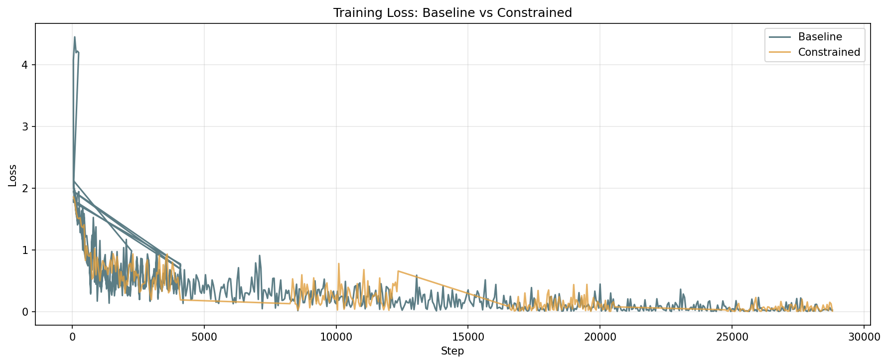
| Task | Baseline Acc | Constrained Acc | Acc Delta | Baseline F1 | Constrained F1 | F1 Delta |
|---|---|---|---|---|---|---|
| nationality | 0.6011 | 0.5732 | -0.0279 | 0.3837 | 0.3710 | -0.0127 |
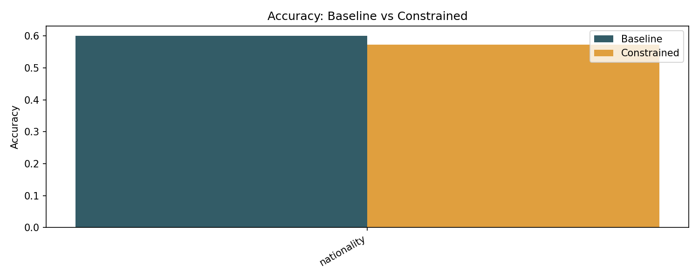
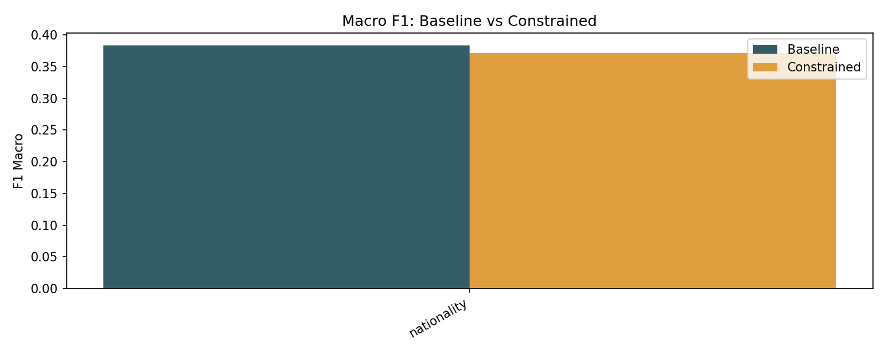
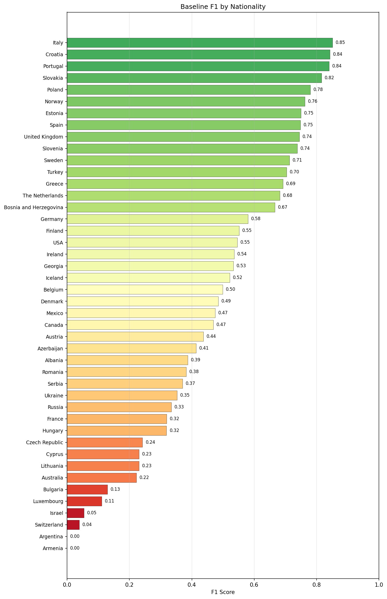
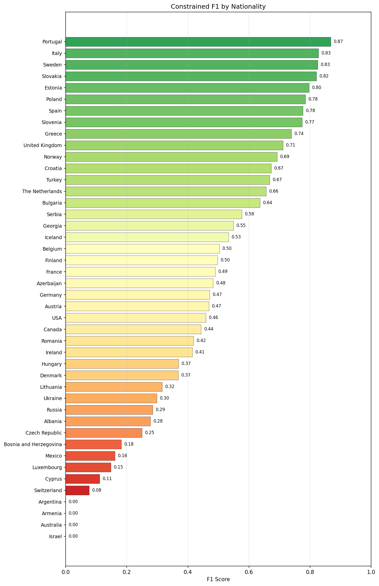
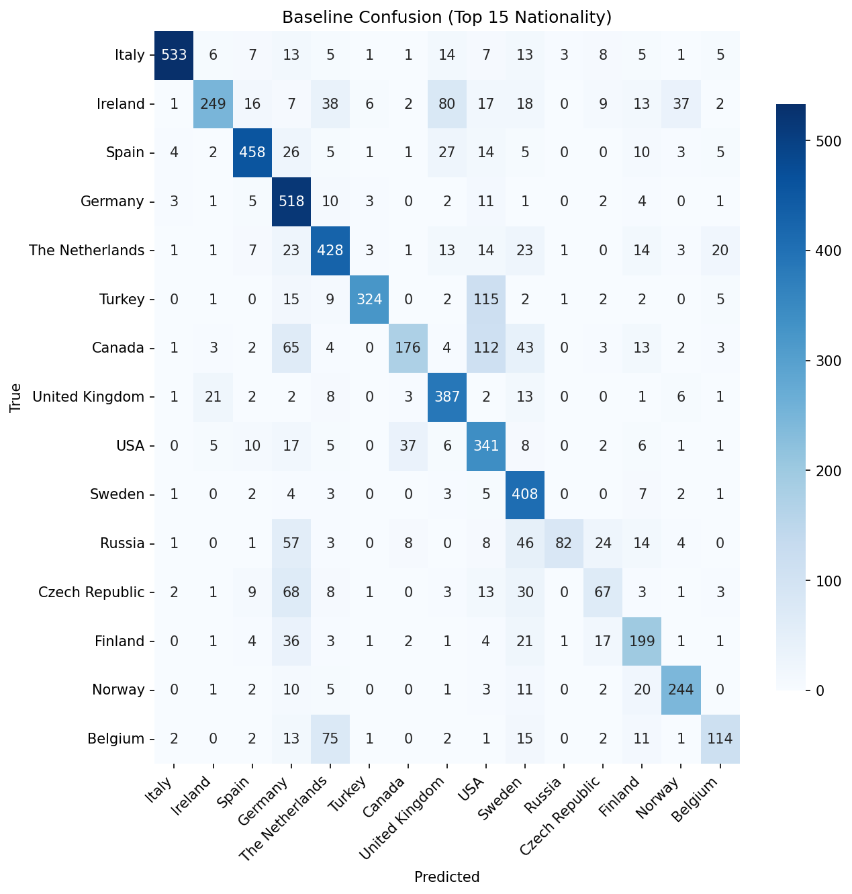
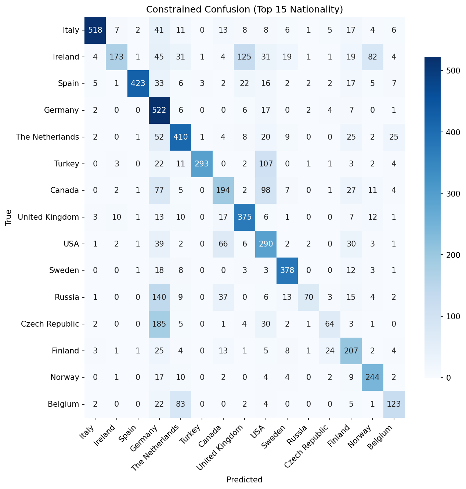
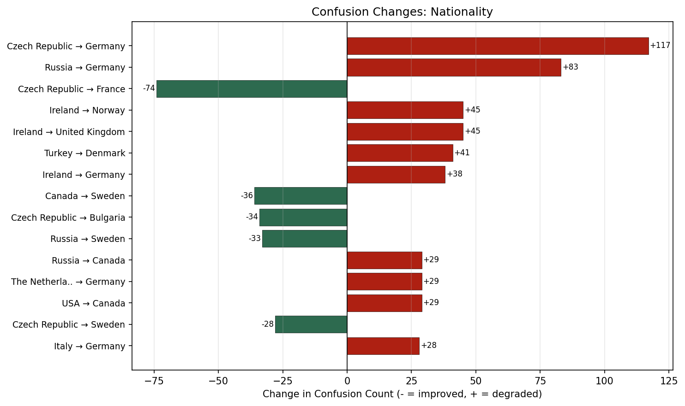
Constrained)'/>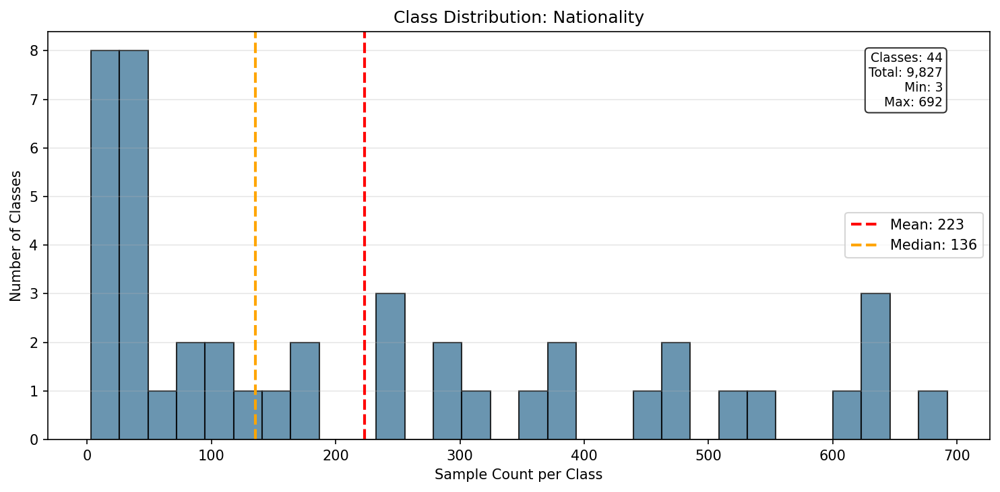
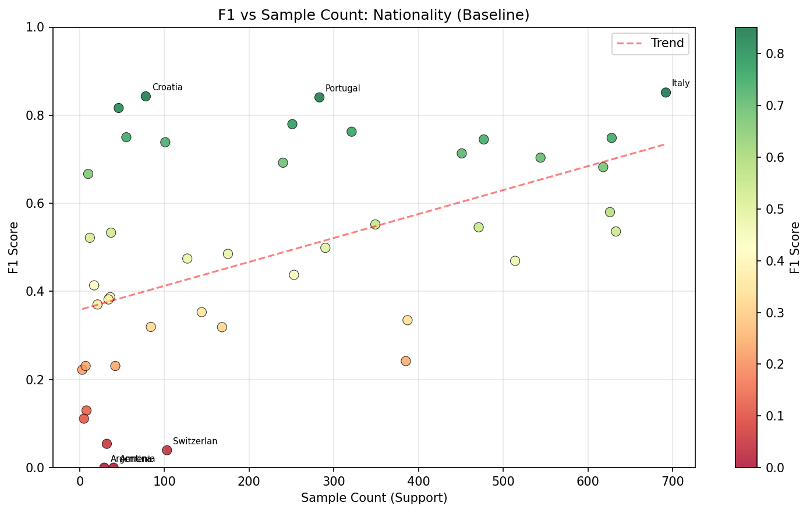
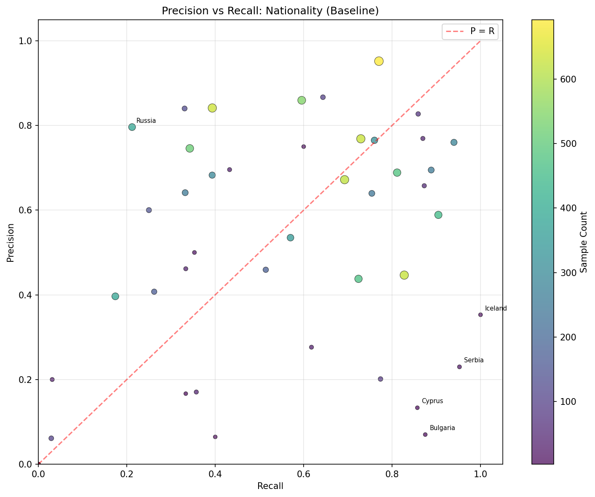
Showing top 20 of 44 classes (sorted by F1).
| Class | Precision | Recall | F1 | Support |
|---|---|---|---|---|
| Italy | 0.9518 | 0.7702 | 0.8514 | 692 |
| Croatia | 0.8272 | 0.8590 | 0.8428 | 78 |
| Portugal | 0.7600 | 0.9399 | 0.8404 | 283 |
| Slovakia | 0.7692 | 0.8696 | 0.8163 | 46 |
| Poland | 0.6947 | 0.8884 | 0.7797 | 251 |
| Norway | 0.7649 | 0.7601 | 0.7625 | 321 |
| Estonia | 0.6575 | 0.8727 | 0.7500 | 55 |
| Spain | 0.7685 | 0.7293 | 0.7484 | 628 |
| United Kingdom | 0.6886 | 0.8113 | 0.7449 | 477 |
| Slovenia | 0.8667 | 0.6436 | 0.7386 | 101 |
| Sweden | 0.5887 | 0.9047 | 0.7133 | 451 |
| Turkey | 0.8594 | 0.5956 | 0.7036 | 544 |
| Greece | 0.6396 | 0.7542 | 0.6922 | 240 |
| The Netherlands | 0.6719 | 0.6926 | 0.6821 | 618 |
| Bosnia and Herzegovina | 0.7500 | 0.6000 | 0.6667 | 10 |
| Germany | 0.4466 | 0.8275 | 0.5801 | 626 |
| Finland | 0.5349 | 0.5702 | 0.5520 | 349 |
| USA | 0.4377 | 0.7240 | 0.5456 | 471 |
| Ireland | 0.8412 | 0.3934 | 0.5361 | 633 |
| Georgia | 0.6957 | 0.4324 | 0.5333 | 37 |
Showing top 20 of 44 classes (sorted by F1).
| Class | Precision | Recall | F1 | Support |
|---|---|---|---|---|
| Portugal | 0.8061 | 0.9399 | 0.8679 | 283 |
| Italy | 0.9250 | 0.7486 | 0.8275 | 692 |
| Sweden | 0.8129 | 0.8381 | 0.8253 | 451 |
| Slovakia | 0.7959 | 0.8478 | 0.8211 | 46 |
| Estonia | 0.6986 | 0.9273 | 0.7969 | 55 |
| Poland | 0.7134 | 0.8725 | 0.7849 | 251 |
| Spain | 0.9176 | 0.6736 | 0.7769 | 628 |
| Slovenia | 0.8471 | 0.7129 | 0.7742 | 101 |
| Greece | 0.7287 | 0.7500 | 0.7392 | 240 |
| United Kingdom | 0.6499 | 0.7862 | 0.7116 | 477 |
| Norway | 0.6354 | 0.7601 | 0.6922 | 321 |
| Croatia | 0.5537 | 0.8590 | 0.6734 | 78 |
| Turkey | 0.8799 | 0.5386 | 0.6682 | 544 |
| The Netherlands | 0.6498 | 0.6634 | 0.6565 | 618 |
| Bulgaria | 0.5000 | 0.8750 | 0.6364 | 8 |
| Serbia | 0.4839 | 0.7143 | 0.5769 | 21 |
| Georgia | 1.0000 | 0.3784 | 0.5490 | 37 |
| Iceland | 0.3636 | 1.0000 | 0.5333 | 12 |
| Belgium | 0.6181 | 0.4241 | 0.5031 | 290 |
| Finland | 0.4286 | 0.5931 | 0.4976 | 349 |
| Model | Facilitating Heads | Irrelevant Heads | Neutral Heads | SVS Score |
|---|---|---|---|---|
| Baseline | 52 | 102 | 230 | 0.4813 |
| Constrained | 90 | 108 | 186 | 0.5148 |
SVS Delta (constrained - baseline): 0.0336
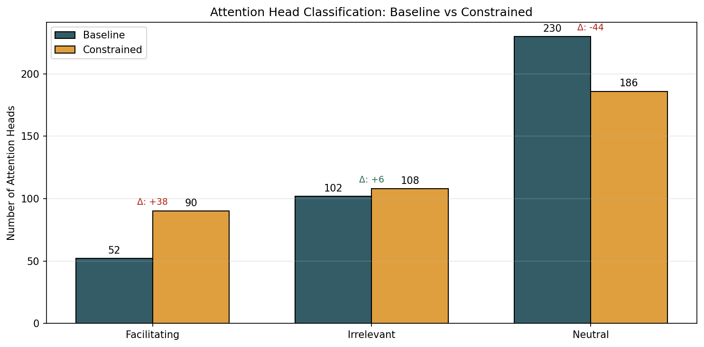
{
"baseline": {
"test": {
"nationality": {
"accuracy": 0.6010990142822266,
"f1_macro": 0.3837469981297977
}
}
},
"constrained": {
"test": {
"nationality": {
"accuracy": 0.5732166767120361,
"f1_macro": 0.3710131231877843
}
}
},
"delta": {
"nationality": {
"accuracy_delta": -0.02788233757019043,
"baseline_accuracy": 0.6010990142822266,
"constrained_accuracy": 0.5732166767120361
}
}
}